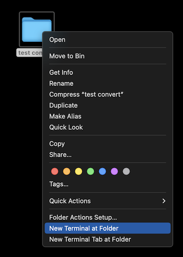

Batch convert to WebP
The script on this website converts all images within a designated folder into the contemporary
WebP format. No need to install software or upload your images to potentially dodgy conversion websites.
How to use
Windows
Windows does not natively support the execution of shell scripts. One way to run the script below is to install
Git on your computer. Other options
are highlighted in this StackOverflow thread.
- Download the convert.sh script and the cwebp executable file.
- Copy those 2 files to the folder with the images that you want to convert to .webp.
- Open Git Bash by pressing the Windows key and typing git bash
- Navigate to your image folder:
cd link/to/your/image/folder
- Start the batch convert process by typing the following command in the terminal window:
sh convert.sh
- All .webp files will be saved in a subfolder called webp.
macOS
- Download the convert.sh script and the cwebp executable file.
- Copy those 2 files to the folder with the images that you want to convert to .webp.
- Right-click on this image folder and select New Terminal at Folder

- Start the batch convert process by typing the following command in the terminal window:
sh convert.sh
- All .webp files will be saved in a subfolder called webp.
Notes
- The script is based on a Stack Overflow answer with
some minor additions. Thanks InfinitePrime!
- It works with jpg, png and tiff files.
- I have tested it on Mac and Windows 10. If there are issues on Linux machines with the script please report
back.
- You can change the quality level of the converted image file. Go to convert.sh and change the number on
line 6. 80 is the default value. Higher means better image quality but larger file sizes.
- cwebp was copied from Google's libwebp codec distribution, version 1.4.0. You might want to update to a later
version or use a different one, e.g. for Linux or pre Silicon Macs. The cwebp executable is saved in the /bin folder.
- If you want something a little more user friendly with an UI I would recommend
webp2jpg-online,
a web app that converts your images locally. You can use the the tool completely offline by downloading the html
files in the "offline" folder.